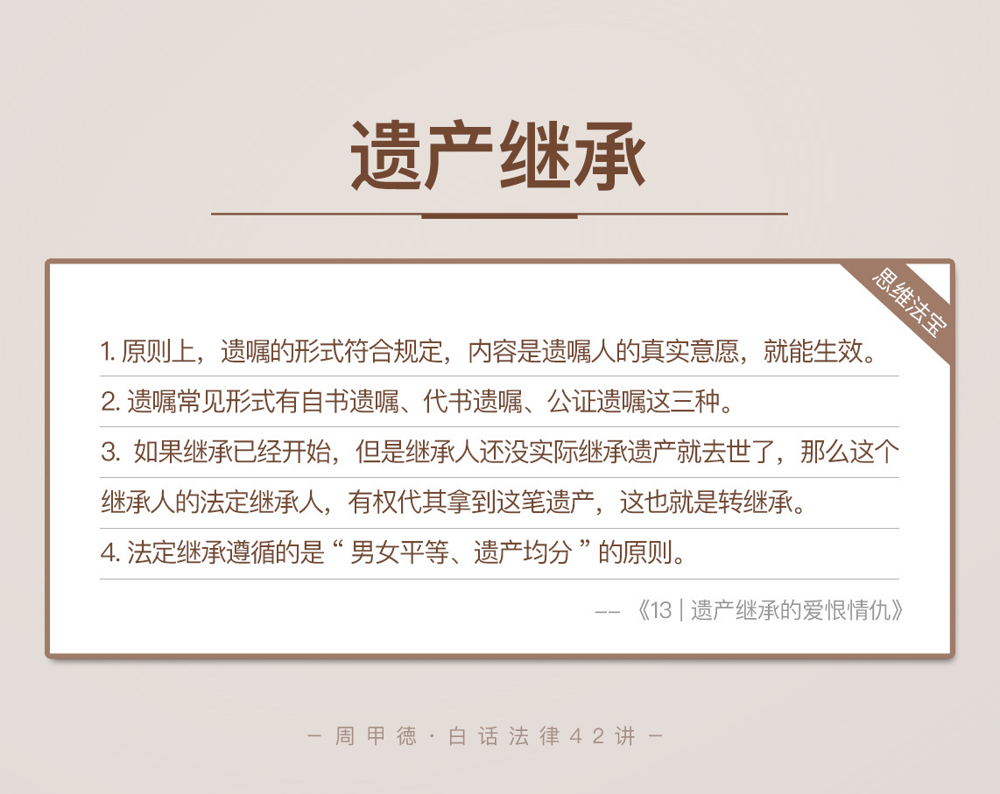

- 00 开篇词 这年头，你真应该懂点法律常识.md.html
- 01 “老周，我想知道” 常见法律认知盲区（一）.md.html
- 02 “老周，我想知道” 律师就在你身边（二）.md.html
- 03 “老周，我想知道” 律师就在你身边（三）.md.html
- 04 “老周，我想知道” 律师就在你身边（四）.md.html
- 05 创业未捷老板跑，社保工资哪里讨？.md.html
- 06 保密还是“卖身”，霸王条款怎么看？.md.html
- 07 编造流言蹭热度？看守所里降温度！.md.html
- 08 合同在手欠款难收，报警有用吗？.md.html
- 09 致创业：谁动了我的股权？.md.html
- 10 又见猝死！工“殇”究竟是不是工伤？.md.html
- 11 期权的“前世今生”.md.html
- 12 裁员面前，你能做的还有什么？.md.html
- 13 抄袭、盗图为什么做不得？.md.html
- 14 加班、工资、休假，你知道多少？.md.html
- 15 受贿原来这么“容易”.md.html
- 16 今天你用“VPN”了吗？.md.html
- 17 漏洞在眼前，可以悄悄破解吗？.md.html
- 18 “爬虫”真的合法吗？.md.html
- 19 非法集资到底是个啥？.md.html
- 20 黄色网站？不仅仅是“黄色”罪名.md.html
- 21 谁修改了我的积分资产？.md.html
- 22 外挂真能大吉大利吗？.md.html
- 23 如何看待“从删库到跑路”？.md.html
- 24 “伪基站”是你的避风港吗？.md.html
- 25 “网络诈骗”真的离你很远吗？.md.html
- 26 智斗中介：“北上广”租房图鉴.md.html
- 27 买买买！买房的“避坑”指南.md.html
- 28 闪婚又闪离，彩礼怎么理？.md.html
- 29 离婚还想和平？你要这么做.md.html
- 30 遗产继承的爱恨情仇.md.html
- 31 骗术升级？假结婚、假离婚的那些事儿.md.html
- 32 孩子学校受伤，谁之过？.md.html
- 33 如何让欠债还钱真正“天经地义”？.md.html
- 34 从透支到盗刷：人人须知的银行卡纠纷.md.html
- 35 远离“套路贷”的套路大全.md.html
- 36 危险！酒驾为什么被罚那么重？.md.html
- 37 老人倒地，“扶”“不服”？.md.html
- 38 “能动手就别吵吵”，代价你真的知道吗？.md.html
- 39 发生交通事故，如何处理？.md.html
- 40 交通事故综合法宝.md.html
- 41 婚姻家庭综合法宝.md.html
- 42 买卖房屋综合法宝.md.html
- 一键直达 法律专栏“食用”指南.md.html
- 加餐 “新冠肺炎”影响下，17个常见法律问题解答.md.html
- 结束语 法律，不会终止的篇章.md.html
- 捐赠
30 遗产继承的爱恨情仇
生老病死是我们人生中的大事，学习法律也不可避免这些。虽然我们都不大乐意谈“死亡”，但遗产问题，确实是每个人都不可避免的。正好前几天有个朋友来咨询，借着这个案子，我也来说说遗产问题。
咨询的朋友，我们都叫她张大姐。张大姐和张二是亲姐弟关系，两人的母亲在2013年已经去世，父亲也在去年，也就是2017年去世了。他们的父母去世后，留下了一套拆迁房，就在北京昌平区，拆迁款估计能有1000多万。
不幸的是，弟弟张二今年因为癌症也不在了，而张二目前的唯一继承人是他儿子，张小二。现在，张大姐和张小二，正因为这套拆迁房而争执不下。为什么呢？这就必须提到张大姐的父亲，也就是张小二的爷爷留下的一份遗嘱了。
张大姐的父亲住院期间，留下了一份遗嘱，内容是把所有财产都留给儿子，也就是张二来继承。现在张二因病去世，张小二自然觉得这些财产，包括房子，就应该是自己的了。
但是张大姐显然不同意，她觉得遗嘱是有问题的。因为遗嘱是在她父亲重病期间立下的，并且是由其他人打印出来，她父亲只是最后签了字。虽然那个人以证明人的身份，在遗嘱上也签了字。但是毕竟只有这么一个人在场，张大姐还是很怀疑遗嘱是否有效。
这事究竟该怎么看呢？其实，这里面主要涉及三个问题：
张小二究竟有没有权利，继承他爷爷奶奶的全部财产？
遗嘱到底有没有法律效力呢？
遗产最后究竟应该怎么分?
同样的，我们要先了解一下，遗产继承相关的几个法律概念。
法律知识
继承
我们首先来看“继承”这个概念。某人死亡后，把自己的财产、债务、可以世袭的官位等转移给别人，就叫做继承。在继承中，死亡的这个人叫做被继承人，被转移的东西也就是我们通常所说的遗产，而继承遗产的也就是继承人。继承人可以是一人，也可以是多个人。
继承一定是从被继承人的死亡开始的，活人自然不存在继承问题，更不存在履行问题。继承的方式一般有两种，遗嘱继承和法定继承。在没有遗嘱的情况下，被继承人死后，遗产由法定的继承人来继承。
转继承
第二个概念我们来看“转继承”。如果某次继承已经开始，但是继承人还没实际拿到遗产就去世了，那么这个继承人的法定继承人，有权代其拿到这笔遗产，这也就是转继承。已死继承人的继承人，其实就是转继承人。
整理来看，其实就是被继承人死亡，遗产留给继承人，但在实际收到遗产前，继承人也死了，就由转继承人实际上继承这笔遗产。
遗嘱
第三个，我们来了解一下“遗嘱”。遗嘱是指，某人生前在法律允许的范围内，用法定方式对财产或其他事务，做出死亡后的归属安排。 立下遗嘱的这个人，一般叫做遗嘱人。遗嘱人死亡时，遗嘱开始生效。
遗嘱人可以用遗嘱的形式，把自己的财产指定给某一个法定继承人来全部继承，也可以把财产安排给法定继承人以外的人。原则上，只要遗嘱的形式符合法律规定，内容是遗嘱人的真实意愿，遗嘱都可以生效，也就是遗嘱人可以把财产给任何人。
另外，遗嘱常见的形式有自书遗嘱、代书遗嘱、公证遗嘱这三种。
自书遗嘱，要由遗嘱人亲笔书写并且签名，同时必须注明年、月、日。
代书遗嘱，要有两个以上的见证人在场，然后由其中一个见证人来代写，同样要注明年、月、日，最后还要有代写人、其他见证人、还有遗嘱人的签名。在这里，见证人和继承人不能有利害关系，比如说，见证人不能是继承人的妻子、儿女等。
公证遗嘱，遗嘱人亲自到公证机关口述或书写遗嘱，然后由公证人员审查遗嘱的真实性、合法性，最后确认有效后，公证人员会给出一份《遗嘱公证书》。一旦立下公证遗嘱，变更、撤销也要到公证机关来处理。
要注意的是，同一个继承，如果有多个内容矛盾的遗嘱同时存在，不管你是包括了自书遗嘱、代书遗嘱的哪种，都首先以公证遗嘱为准。
法定继承顺序
第四个知识，我们来看法律上遗产继承的顺序，也就是法定遗产继承人的顺序。根据《中华人民共和国继承法》的第十条，主要分为第一顺序和第二顺序。
第一顺序包括配偶、子女、父母。
第二顺序包括兄弟姐妹、祖父母、外祖父母。
有第一顺序人选的，遗产由第一顺序的人来继承，第二顺序的人没有继承资格。如果没有第一顺序的人选，再由第二顺序替补来继承。
另外，不管你婚生还是非婚生，也不管是血缘关系还是收养关系，或是再婚家庭的扶养关系，在法律面前，一律属于平等地位。具体来说：
《继承法》的子女，包括婚生子女、非婚生子女、养子女和有扶养关系的继子女。
《继承法》的父母，包括生父母、养父母和有扶养关系的继父母。
《继承法》的兄弟姐妹，包括同父母的兄弟姐妹、同父异母或者同母异父的兄弟姐妹、养兄弟姐妹、有扶养关系的继兄弟姐妹。
情景分析
现在我们再来看张大姐的继承问题，你的思路应该清晰了不少。
首先，张小二有没有权利，继承他爷爷奶奶的全部财产呢？
答案应该是没有。张小二的爷爷奶奶去世后，他的父亲张二有权继承遗产，注意这里，我没有说“张二有权继承全部遗产”，因为还要看遗嘱是否有效，而遗嘱问题待会儿我会解释。
继续往后分析，张二还没实际继承，就生病去世了。这时候的张小二，作为张二的法定继承人，是可以代他父亲张二实际接受遗产的，也就是我们所说的转继承。
转继承跟继承是不同的，所以张小二并没有直接继承他爷爷奶奶财产的权利，他继承的本质还是属于他父亲张二的财产。
第二个问题，可能也是我们最关心的，遗嘱是否有效呢？
前面说了，遗嘱生效至少要满足两个条件，一是形式要符合法律规定，二是内容要符合遗嘱人的真实意愿。这个案子的遗嘱，是在老人病重期间立下的，确实不能保证内容是遗嘱人的真实意愿。
另外，这份遗嘱既不能算是自书遗嘱，也不符合代书遗嘱的法律条件。而且，遗嘱不是遗嘱人亲自书写并打印的，就可能出现第三人删改、编造的情况，所以遗嘱显然是无效的，不受法律认定。自然，张二也就无权继承全部遗产，张小二这个转继承人，更是没有资格。
那么第三个问题，遗产怎么分，答案就比较明了了。
既然遗嘱无效，就应该按照法定继承来处理遗产问题。法定继承的顺序，前面我已经讲过了，在这个案子中，张大姐和张二显然都属于第一顺序继承人，也是唯二的两个继承人。同时，法定继承遵循的是“男女平等、遗产均分”的原则。
所以，假定本案中遗产最终被确认为1000万，简单来说，就应该是张大姐和张二各得500万。然而张二没有实际继承就去世了，张小二这个转继承人，就应该获得张二的这笔500万。
你看，了解了这些基本概念和原则，遗产问题其实也很容易弄明白。
不过呢，我还是要再补充几句。事实上，我们退一步来说，即使遗嘱本身符合法定形式，内容也是张小二爷爷的真实意愿，遗嘱本身还是有问题的。为什么呢？
因为张小二爷爷并没有权利处置整套房子。
细心的同学，应该注意到了，开头我专门强调的两个时间。张小二的奶奶2013年去世，爷爷则是2017年去世。事实上，在奶奶去世时，就已经有了法定继承的开始。
当时的财产，比如说1000万的房子，本身是爷爷奶奶的夫妻共同财产，首先应该有一半属于爷爷，而剩下的，也就是属于奶奶的另一半才是遗产，应该由爷爷、张大姐和张二平分，每人各得六分之一。
所以说，奶奶去世后，房子其实是张小二爷爷、张大姐、张二的共有物，并不是爷爷的个人财产，只不过他占有的份额最大而已。因而，他没有权利立遗嘱处置他人财产。
思维法宝
现实生活中，我见过不少因为争遗产而打官司的例子，之所以会这样，一方面是遗产价值高，利益面前总会有人眼红，当利益超过亲情的维系范围时，纠纷自然出现。另一方面，主要就是遗嘱问题了，经常出现多份遗嘱，或是单方提供遗嘱、但其他继承人不认可的情况。
人死了钱没花了，让人可惜；人死了也不得安宁，就让人叹息了。我们不能控制人心，也阻挡不了贪婪，但是减少可能的隐患，还是有必要的。遗产问题，最重要的还是提前、合法的财产安排。
那么，怎么立遗嘱才有效呢？这里，我也总结了一下。
条件允许时，尽量选择公证遗嘱。提前到公证处把遗嘱给固定下来，这样，除了本人外，其他人都不能修改或者撤销，自然就能避免不少的纷争，而继承人也无话可说。
如果没有办理公证的条件，那就优先选择自书遗嘱。自己亲自手写并签名，还可以手写多份，分别交给子女，也是有效的方案。
如果前两种都不能进行，就选择代书遗嘱。一定要找两个以上见证人，注意不要有利害关系；同时，最好能有录音录像，证明遗嘱人意志清醒，内容是真实意愿。这样也可以让人信服，避免麻烦。

还是那句话，虽说我讲的是法律，但是形形色色的案例和故事，其实都是人生，你的体会一定不只有法律。法律本质是我们生活的底线，而不是最高标准。就拿遗产继承来说，如果子女多一些孝顺和关爱，老人少一些重男轻女和偏爱，遗产问题，大可不必这么尖锐。
很多事情，放在明面上，或许才是最好的解决方式，这也是法律公开透明的意义。
我就曾遇到过这么一个遗产纠纷，原因是出现了多份自书遗嘱。情节有些荒诞，一位老人年纪大了，由多个子女按月轮流照顾。而老人每到一家，就会出一份“私人订制”的遗嘱，约定所有遗产都给这家的子女。老人或许也是有苦衷的，但是在他百年后，势必是一场轰轰烈烈的遗产争夺大战了。
这种事情你怎么看呢？你也陷入过或者见过别人家的遗产纠纷吗？最后又是怎样的结局收尾呢？欢迎你留言和我交流，也可以留下你的思考或者疑问。也欢迎你点击右下角的“请朋友读”，把文章分享给你最亲近的人和朋友圈里。
© 2019 - 2023 Liangliang Lee. Powered by gin and hexo-theme-book.